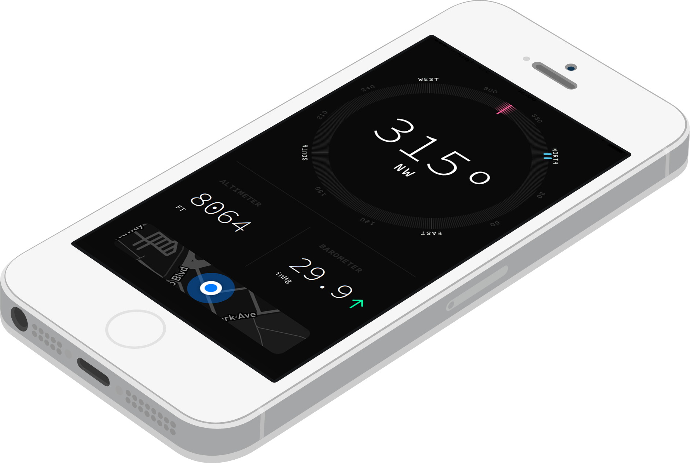

surveyor
The instrument for adventures
A perfect companion for hiking the trails, camping in the wilderness, a mountaineering expedition, sailing around the world, scaling the 14ners, exploring the great outdoors, a fishing excursion, backpacking in the backcountry, when you're in BFE, hunting big game, monitoring conditions at basecamp, assessing the terrain

